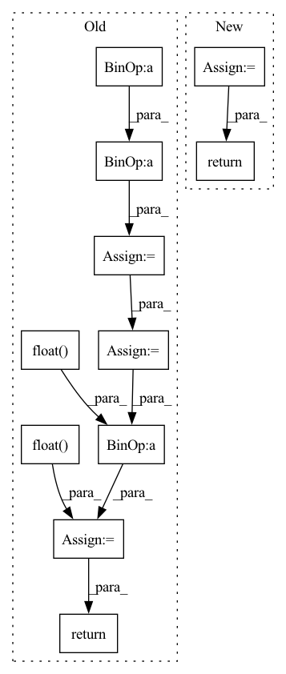

Pattern ID :16463

Before Change
// Self-attention
// TODO: 其他模型结构
len_range = torch.from_numpy(np.arange(self.max_his)).to(history.device)
position = (lengths[:, None] - len_range[None, :seq_len]) * valid_his
pos_vectors = self.p_embeddings(position)
his_vectors = his_vectors + pos_vectors
attn_mask = valid_his.view(batch_size, 1, 1, seq_len)
his_vectors = self.transformer(his_vectors, attn_mask)
his_vectors = his_vectors * valid_his[:, :, None].float()
his_vector = his_vectors.sum(1) / lengths[:, None].float()
// his_vector = his_vectors[torch.arange(batch_size), lengths - 1, :]
intent_pred = self.proj(his_vector) // bsz, K
return intent_pred
After Change
def forward(self, history, lengths, t_history, user_min_t):
valid_his = (history > 0).long()
his_vectors = self.i_embeddings(history)
his_vector = self.encoder(his_vectors, lengths, valid_his, t_history, user_min_t)
intent_pred = self.proj(his_vector) // bsz, K
return his_vector, intent_pred
class GRUEncoder(nn.Module):
In pattern: SUPERPATTERN
Frequency: 3
Non-data size: 11
Instances
Fragment ID: 55400013
Project Name: thuwangcy/rechorus
Commit Name: 7c6b4cfaf0b7765452a8e750212a05ddf29aaae7
Time: 2021-08-16
Author: THUwangcy@gmail.com
File Name: src/models/developing/TiMiRec.py
M Class Name: IntentPredictor
N Class Name: IntentPredictor
M Method Name: forward(5)
N Method Name: forward(3)
M Parent Class: nn.Module
N Parent Class: nn.Module
M File Name: src/models/developing/TiMiRec.py
N File Name: src/models/developing/TiMiRec.py
M Start Line: 207
M End Line: 224
N Start Line: 217
N End Line: 222
'>
Before Change
input_shape_tmp = input.shape
random_matrix = torch.rand(input_shape_tmp, device=input.device)
one_zero_m = (random_matrix < p).float()
mask_flag = torch.nn.functional.max_pool2d(one_zero_m, (self.block_size, self.block_size), stride=1, padding=1)
mask = 1.0 - mask_flag
elem_numel = input_shape[0] * input_shape[1] * input_shape[2] * input_shape[3]
elem_numel_m = float(elem_numel)
elem_sum = mask.sum()
output = input * mask * elem_numel_m / elem_sum
return output
class PointGenerator(object):
After Change
gamma *= s / (s - self.block_size + 1)
matrix = torch.rand(x.shape, device=x.device)
matrix = (matrix < gamma).float()
mask_inv = F.max_pool2d(
matrix,
self.block_size,
stride=1,
padding=self.block_size // 2,
data_format=self.data_format)
mask = 1. - mask_inv
y = x * mask * (mask.numel() / mask.sum())
return y
class PointGenerator(object):
'>
Fragment ID: 55399759
Project Name: miemie2013/miemiedetection
Commit Name: aabe1f2d364493c30179de6cf7d5c2d0c6ee7258
Time: 2021-12-30
Author: 53960695+miemie2013@users.noreply.github.com
File Name: mmdet/models/custom_layers.py
M Class Name: DropBlock
N Class Name: DropBlock
M Method Name: forward(2)
N Method Name: forward(2)
M Parent Class: torch.nn.Module
N Parent Class: torch.nn.Module
M File Name: mmdet/models/custom_layers.py
N File Name: mmdet/models/custom_layers.py
M Start Line: 538
M End Line: 576
N Start Line: 724
N End Line: 745
'>
Before Change
return (center_widths[None, ...] > positions.abs()[..., None]).float()
def get_positional_features_gamma(positions, features, seq_len):
center_widths = 2 ** torch.arange(1, features + 1, device = positions.device).float()
center_widths = center_widths - 1
return (center_widths[None, ...] > positions.abs()[..., None]).float()
def get_positional_embed(seq_len, feature_size, device):
distances = torch.arange(-seq_len + 1, seq_len, device = device)
After Change
def get_positional_features_gamma(positions, features, seq_len, stddev = None, start_mean = None, eps = 1e-8):
if not exists(stddev):
stddev = seq_len / (2 * features)
if not exists(start_mean):
start_mean = seq_len / features
mean = torch.linspace(start_mean, seq_len, features)
mean = mean[None, ...]
concentration = (mean / stddev) ** 2
rate = mean / stddev ** 2
probabilities = gamma_pdf(positions.float().abs()[..., None], concentration, rate)
probabilities = probabilities + eps
outputs = probabilities / torch.amax(probabilities)
return outputs
def get_positional_embed(seq_len, feature_size, device):
distances = torch.arange(-seq_len + 1, seq_len, device = device)
'>
Fragment ID: 55399502
Project Name: lucidrains/enformer-pytorch
Commit Name: 0dc2ffafddd23e90339d922d2dd02ee5500ce5de
Time: 2021-10-27
Author: lucidrains@gmail.com
File Name: enformer_pytorch/enformer_pytorch.py
M Class Name: AnonimousClass
N Class Name: AnonimousClass
M Method Name: get_positional_features_gamma(6)
N Method Name: get_positional_features_gamma(3)
M Parent Class:
N Parent Class:
M File Name: enformer_pytorch/enformer_pytorch.py
N File Name: enformer_pytorch/enformer_pytorch.py
M Start Line: 46
M End Line: 49
N Start Line: 51
N End Line: 65